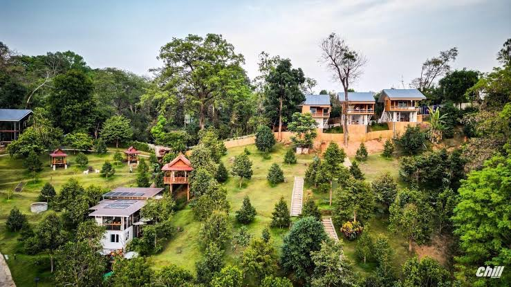

หลงสวน โฮมสเตย์
หลงสวนโฮมสเตย์ ถูกสร้างมาจากความที่เจ้าของสวน อยากมีบ้านพักในสวนทุเรียน เช้ามา เย็นมา จะได้สูดอากาศบริสุทธิ์ ให้เต็มปอด
หลงสวนโฮมสเตย์ ถูกสร้างมาจากความที่เจ้าของสวน อยากมีบ้านพักในสวนทุเรียน เช้ามา เย็นมา จะได้สูดอากาศบริสุทธิ์ ให้เต็มปอด
ภูริชญาแคมป์ ลานกางเต็นท์ติดลำธาร นั่ลชิวกับบรรยากาศ อยู่ที่ แก่งทรายงาม ตำบล น้ำหมัน อำเภอท่าปลา อุตรดิตถ์